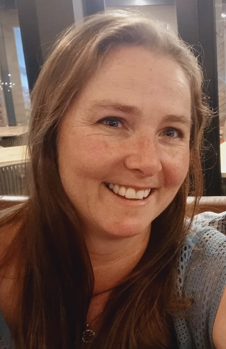

Tanya Glenn

Objective Statement
Seeking to leverage my ongoing web development training and passion for coding
to contribute innovative solutions, enhance my skills, and collaborate within a
dynamic team, while delivering impactful digital experiences.
Education
Full-Stack Web Developer
Institution: Udemy
Location: Online
Graduation Year: 2023
Senior Certificate
Institution: HTS P.W. Botha
Location: George, WC
Graduation Year: 1994
Work Experience
Graphic Designer : Cynergy Social Media Management [Sep 2017 - Current]
- Creating Visual Assets
- Visual conceptualization
- Curate, and manage all published content (images, video and written)
- Client collaboration
- File preparation and production
Personal Assistant | Acher Aviation, Durban [Aug 2007 - Nov 2010]
- PA to Shareholders
- Reception & switchboard
- Data capturing
- Creditors
- Debtors
- Management accounts
- Travel arrangements
- VISA & Passport application processing
- Leave records
Personal Assistant | Munnich Visser Architects, George [Jan 2004 - Jul 2007]
- PA to Owner
- Reception & switchboard
- Data capturing
- Debtors
- Management accounts
- Travel arrangements
- VISA / Passport applications processing
- Leave records
Technical Skills
- Programming Languages - HTML [CSS, and JavaScript]
Soft Skills:
- Strong problem-solving abilities
- Clear and effective communication
- Team player
- Comfortable with change and able to adapt
Additional Skills
- UI/UX design and graphic design
- Project Management
- Continual desire to learn and improve in a rapidly evolving tech landscape
Awards/Certifications
More About Me
Contact Me